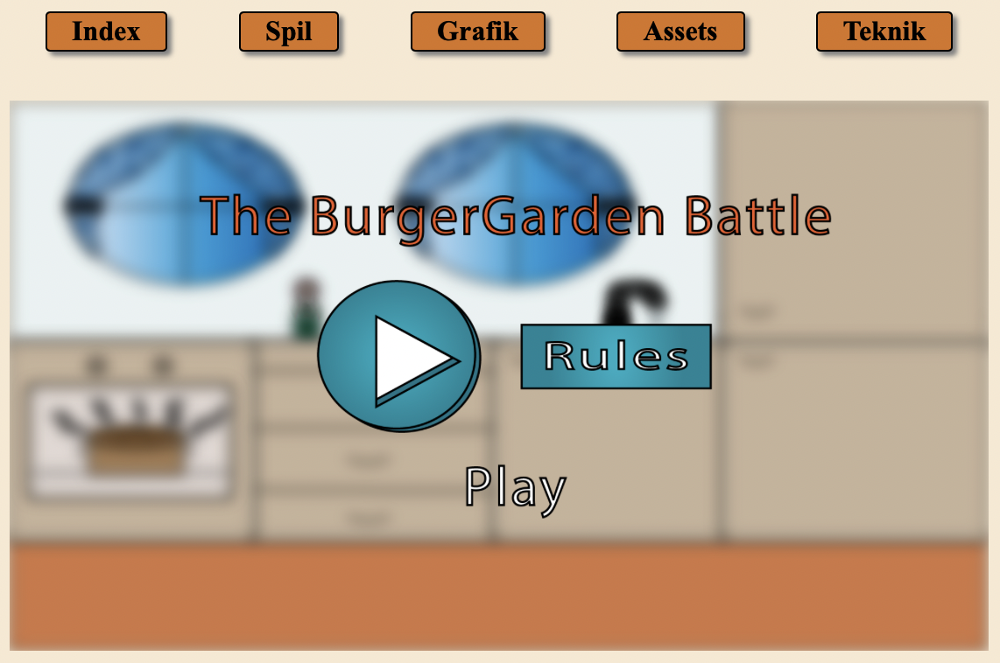

<!DOCTYPE html>
<html lang="en">
  <head>
    <meta charset="UTF-8" />
    <meta name="viewport" content="width=device-width, initial-scale=1.0" />
    <meta name="robots" content="noindex" />
    <link rel="stylesheet" href="css/style.css" />
    <link rel="stylesheet" href="css/layout.css" />
    <title>Index</title>
  </head>
</html>
<body>
  <header>
    <div class="button-container">
        <a href="ommig.html" class="button">Om mig</a>
        <a href="cv.html" class="button">CV</a>
        <a href="projekter.html" class="button">Projekter</a>
        <a href="kontakt.html" class="button">Kontakt</a>
      </div>
    <div class="logo-container">
      <a href="index.html" class="button-link"></a>
    </div>
  </header>
  <main>
    <h1 class="overskrift">TEMA 4 - Grundlæggende animation</h1>
    
      <div class="spil">
        <a href="http://johanneøa.dk/website/index.html" target="_blank">
          
        </a>
      </div>
   
    <div><p class="p_____">
        I dette tema har jeg opnået en grundlæggende forståelse for, hvordan JavaScript og CSS-animationer kan bruges til at skabe interaktive og engagerende spil.
Jeg arbejdede med designet af spillets visuelle elementer i Adobe Illustrator, herunder UI-komponenter og baggrundsgrafik, og integrerede lyd for at gøre spillet mere dynamisk. Ved hjælp af aktivitets- og anvendte JavaScript til at styre interaktivitet og logik.
Gennem dette projekt har jeg styrket mine evner inden for spiludvikling, animation og design, samtidig med at jeg har lært at kombinere tekniske og kreative løsninger for at skabe en helstøbt brugeroplevelse.

    </p>
<p class="videre_">Tryk på billedet ovenover og gå direkte til sitet og se resultaterne af opgaven!</p>
</div>


    <div class="tilbageknap">
        <a href="projekter.html" class="button-link"></a>
      </div>
  </main>
  <footer>
    <div class="footer">
      <p>Johanne Ørskov Andresen<span class="designer"> // Portfolioeksamen 2025</span></p>
    </div>
    <a href="index.html" class="button-link"></a>
</div>
  </footer>
</body>
